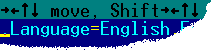

-1). Каждый экземпляр редактора имеет уникальный идентификатор, который не повторяется в текущей сессии Far Manager. ВНИМАНИЕ!
ВНИМАНИЕ!
- Обращение к текущему редактору безопасно только в контексте ProcessEditorInputW. Во всех остальных случаях текущим внезапно может оказаться совсем не тот редактор, который вы ожидали увидеть. Используйте EditorInfo.EditorID или ProcessEditorEventInfo.EditorID (в зависимости от контекста).
| Команда | Описание |
|---|---|
| ECTL_ADDCOLOR | Задать цвет части строки. Эта команда может быть вызвана несколько раз для одной и той же строки для задания нескольких цветных областей.
FALSE, иначе TRUE. |
| ECTL_ADDSESSIONBOOKMARK | Добавить позицию навигации (это особый вид закладок, отличающийся от обычных тем, что действуют в пределах сеанса редактора) в стек,
при этом, если добавление идет между элементами стека, то все закладки, с индексом больше текущего, будут удалены.
TRUE в случае успешного выполнения. |
| ECTL_CLEARSESSIONBOOKMARKS | Удалить все позиции навигации.
|
| ECTL_DELETEBLOCK | Удалить блок в редакторе.
TRUE в случае удачного удаления блока и FALSE, если редактор заблокирован (пользователь нажал Ctrl+L) или нет выделенного блока. |
| ECTL_DELCOLOR | Удалить цветовую область в строке. Эта команда может быть вызвана несколько раз для одной и той же строки.
FALSE, иначе TRUE. |
| ECTL_DELETECHAR | Удалить символ под курсором.
TRUE в случае удачного удаления и FALSE, если редактор заблокирован (пользователь нажал Ctrl+L). |
| ECTL_DELETESESSIONBOOKMARK | Удалить указанную позицию навигации.
TRUE в случае успешного выполнения. |
| ECTL_DELETESTRING | Удалить текущую строку.
TRUE в случае удачного удаления и FALSE, если редактор заблокирован (пользователь нажал Ctrl+L). |
| ECTL_EXPANDTABS | Заменить все символы табуляции в строке пробелами.
TRUE в случае удачной замены и FALSE, если редактор заблокирован (пользователь нажал Ctrl+L) или нет такой строки. |
| ECTL_GETBOOKMARKS | Получить информацию о закладках для текущего редактируемого файла.
0, если файл ещё не открыт, в противном случае, возвращается необходимый размер буфера памяти. |
| ECTL_GETSESSIONBOOKMARKS | Получить информацию о позициях навигации для текущего редактируемого файла.
0 в случае ошибки, в противном случае, возвращается необходимый размер буфера памяти. |
| ECTL_GETCOLOR | Получить цвет части строки.
FALSE, иначе TRUE. |
| ECTL_GETFILENAME | Получить имя открытого в редакторе файла.
Функция возвращает требуемый размер буфера в символах, с учетом завершающего нуля. Если Param2 = NULL или Param1 меньше требуемого размера, функция просто вернет необходимый размер буфера. |
| ECTL_GETINFO | Получить информацию о редакторе.
TRUE в случае успешного выполнения. |
| ECTL_GETSTRING | Получить информацию о строке.
FALSE, иначе TRUE. |
| ECTL_GETTITLE | Получить заголовок редактора.
Функция возвращает требуемый размер буфера в символах, с учетом завершающего нуля. Если Param2 = NULL или Param1 меньше требуемого размера, функция просто вернет необходимый размер буфера. |
| ECTL_INSERTSTRING | Вставить новую строку (разорвать строку) с текущей позиции курсора и переместить курсор либо на первую позицию новой строки, либо на позицию с учётом отступа.
// вставить пустую строку без отступа
Info.EditorControl(-1,ECTL_INSERTSTRING,0,0);
Функция вернёт TRUE в случае удачного выполнения операции и FALSE, если редактор заблокирован (пользователь нажал Ctrl+L). |
| ECTL_INSERTTEXT | Вставить текст, начиная с позиции курсора.
ECTL_INSERTTEXT работает так, как будто текст вводится с клавиатуры.
// вставить строку "Text" в текущую позицию курсора
Info.EditorControl(-1,ECTL_INSERTTEXT,0,(void*)L"Text");
Функция вернёт TRUE в случае удачного выполнения операции и FALSE, если редактор заблокирован (пользователь нажал Ctrl+L) или строка равна NULL. |
| ECTL_NEXTSESSIONBOOKMARK | Перейти на следующую позицию навигации.
TRUE в случае успешного выполнения. |
| ECTL_PREVSESSIONBOOKMARK | Перейти на предыдущую позицию навигации. Если после предыдущего вызова команды ECTL_ADDSESSIONBOOKMARK не выполнялось операций с позициями навигации, то перед переходом запоминается текущая позиция редактора в качестве новой позиции навигации.
TRUE в случае успешного выполнения. |
| ECTL_PROCESSINPUT | Передаёт структуру INPUT_RECORD, указатель на которую передаётся в Param2, внутреннему редактору Far Manager для обработки. Учтите, что если ваш плагин экспортирует функцию ProcessEditorInputW,
то данные из Param2 сразу же будут переданы в
case ECTL_PROCESSINPUT:
if (ProcessEditorInput(Param))
return(TRUE);
...
Поэтому используя EditorControl(ECTL_PROCESSINPUT) в функции ProcessEditorInputW следите за тем, чтобы не впасть в бесконечную рекурсию. |
| ECTL_QUIT | Закрыть редактор. Любая не сохраненная информация будет потеряна.
TRUE. |
| ECTL_READINPUT | Заполняет структуру INPUT_RECORD, читая данные со стандартного устройства ввода.
|
| ECTL_REALTOTAB | Конвертировать реальную строковую позицию курсора в экранную позицию. Если строка не содержит символов табуляции, входная и получаемая позиция будут равными.
FALSE, иначе TRUE. |
| ECTL_REDRAW | Перерисовать окно редактора.
TRUE. |
| ECTL_SAVEFILE | Позволяет плагину сохранить редактируемый файл.
TRUE. |
| ECTL_SELECT | Выделить или снять выделение с блока.
TRUE. |
| ECTL_SETKEYBAR | Функция, позволяющая управлять поведением строки функциональных клавиш в редакторе.
Вызывать данную команду в событии EE_READ не имеет смысла, т.к. строки функциональных клавиш, как объекта, в момент загрузки файла в редактор ещё не существует. Функция возвращает |
| ECTL_SETPARAM | Изменение настроек текущего редактора.
TRUE в случае успешного изменения параметров. |
| ECTL_SETPOSITION | Установить позицию курсора.
TRUE. |
| ECTL_SETSTRING | Поместить текст в строку.
TRUE. |
| ECTL_SETTITLE | Установить заголовок редактора (верхняя статусная панель).
Для восстановления статусной строки укажите параметр Param2 = NULL или пустой строке. Заголовок не будет выведен, если статусная строка погашена. При показе заголовок будет усечён до размера, не затрагивающего служебную информацию (кодировка, позиция, etc.)
// DrawLine\DrawLine.cpp: функция SetTitle
Info.EditorControl(-1,ECTL_SETTITLE,0,GetMsg(IDTitle));
Эта команда всегда возвращает TRUE. |
| ECTL_TABTOREAL | Конвертировать экранную позицию курсора в реальную строковую позицию. Если строка не содержит символов табуляции, входная и получаемая позиция будут равными.
FALSE, иначе TRUE. |
| ECTL_UNDOREDO | Функция, позволяющая управлять поведением операции Отмена-Возврат действия, т.н. Undo-Redo.
TRUE в случае успешного выполнения операции. |
| ECTL_SUBSCRIBECHANGEEVENT | Подписаться на получение EE_CHANGE событий для заданной сессии редактора.
TRUE в случае успешного выполнения операции. |
| ECTL_UNSUBSCRIBECHANGEEVENT | Отписаться от получения EE_CHANGE событий для заданной сессии редактора.
TRUE в случае успешного выполнения операции. |
Command.Command.